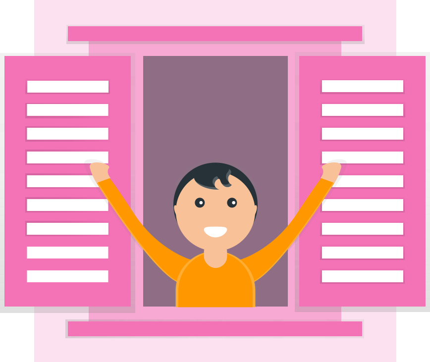

Minion Speak

ClickMe
Output will come here 👇
ABOUT:
Convert from English to Minion speak. This language is spoken by the minions in Despicable Me. The language is actually lots of languages. Yi kai yai yai bananna! Minion is a registered trademark of Universal Studios.